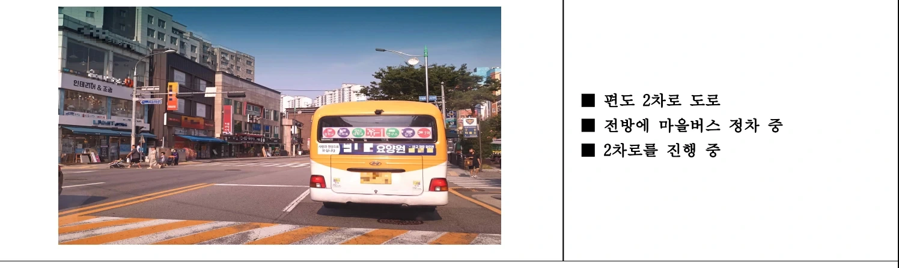

706. Hai cách lái xe nào là an toàn nhất trong tình huống sau?

- ①Liên tục nhấn còi ở phía sau xe buýt để giục đi nhanh.
- ②Kiểm tra tình hình xung quanh rồi chuyển sang làn đường số 1.
- ③Bật đèn nháy khẩn cấp, tăng tốc và chuyển sang làn đường số 1.
- ④Khi chuyển làn đường số 1, không cần chú ý đến người đi bộ đi ra từ phía trước xe buýt.
- ⑤Nếu có xe phía sau ở làn đường số 1, không cố gắng bất chấp chuyển làn đường và đợi ở phía sau xe buýt.
Xem đáp án
Đáp án
② Kiểm tra tình hình xung quanh rồi chuyển sang làn đường số 1.
⑤ Nếu có xe phía sau ở làn đường số 1, không cố gắng bất chấp chuyển làn đường và đợi ở phía sau xe buýt.
Căn cứ
Nên tránh bấm còi liên tục mà không có lý do chính đáng. Khi chuyển hướng nên bật xi nhan và kiểm tra sự an toàn của xe phía trước và phía sau trước khi đi tiếp. Nếu tầm nhìn kém, hãy chú ý đến sự an toàn của người đi bộ.
Phần căn cứ là bản dịch máy để tham khảo.